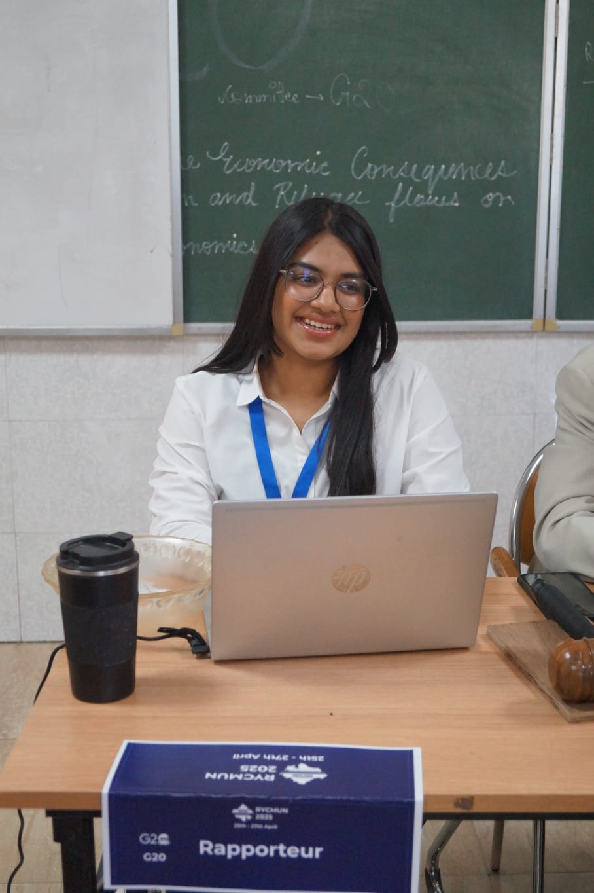

About Me

I am a confident, diplomatically inclined individual with a strong interest in international relations and structured dialogue. Since starting my MUN journey in 2023, I’ve served as both a delegate and an Executive Board member at national and international conferences. These experiences have strengthened my grasp of committee dynamics, Rules of Procedure, and the value of inclusive, balanced debate.
Skills
- Leadership
- Expertise in Rules of Procedure
- Diplomacy
- Conflict Resolution
- Active Listening
- Delegate Engagement
Delegate Experience
DPSMUN 2022
UNSC
HGSMUN 2023
G20
IMUN 2023
WHO
Executive Board
RYC 2024
UNSC
RYC 2025
G20
Key Contributions
Head of Brochure Designing – DPSMUN
Trainer – Introductory MUN Workshop
Contact
📞 +91 9772740777